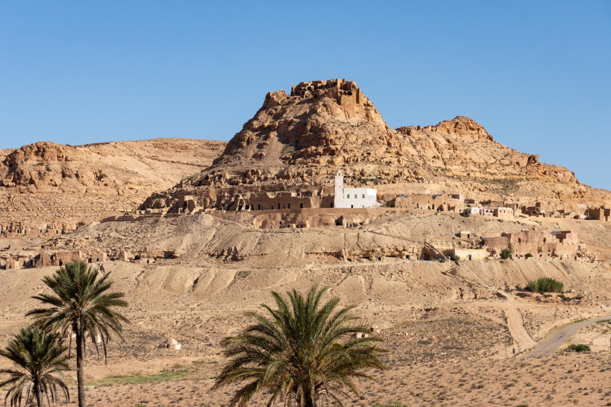
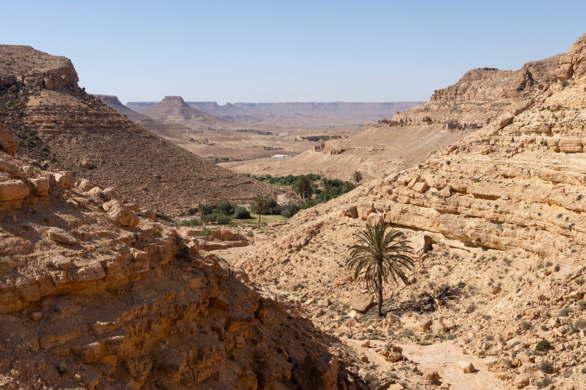
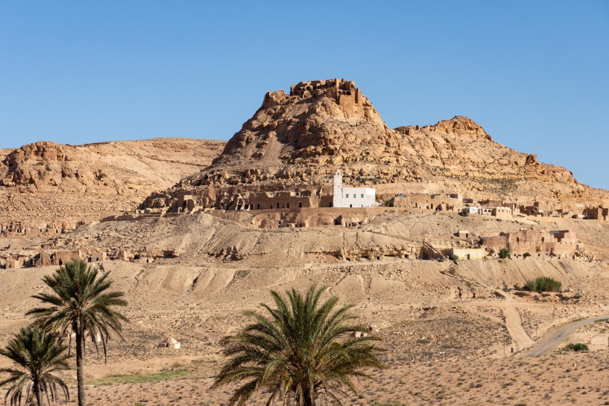
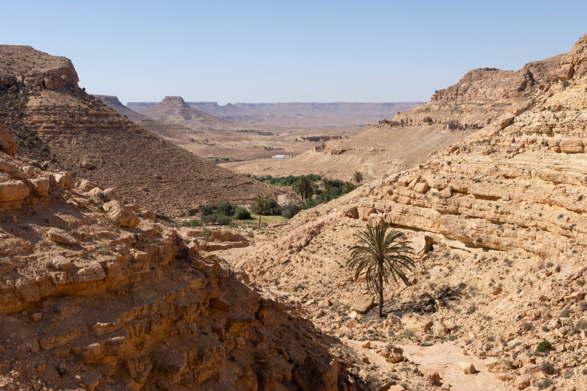
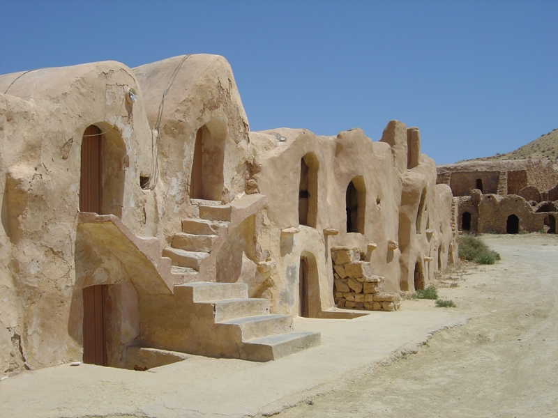
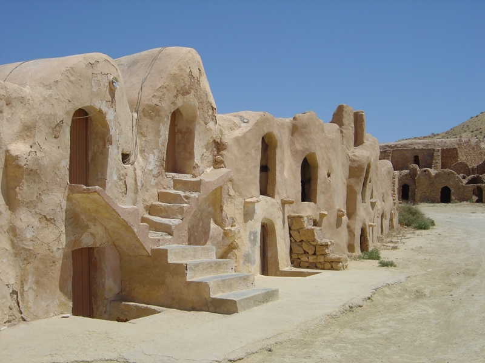

Situé à l'extrême Sud-Est du pays, le Gouvernorat de Tataouine bénéficie d'une position géographique privilégiée vu son ouverture sur deux pays voisins la Libye et l'Algérie. Tataouine est limité par les Gouvernorats de Médenine et Kébili au Nord, la Libye et le Gouvernorat de Médenine à l'Ouest et l'Algérie à l'Est. Doté d'un important champ pétrolier à El Borma, la région connaît actuellement un élan de développement.

La ville se dote ensuite d'une mosquée (1898) pourvue ultérieurement d'un minaret (1903), d'un abattoir municipal (1911), d'un bureau de poste (1913), d'une infirmerie-dispensaire (1914), d'une école primaire (1916) et d'un tribunal. Elle possède aussi une église construite pendant la Première Guerre mondiale et une synagogue. Le bâtiment qui fait la célébrité de Tataouine est le bagne militaire de l'armée française qu'elle abrite jusqu'en 1938, année de l'abolition des bagnes en France. Il accueille des Bat’ d'Af’, dont les recrues étaient des condamnés de droit commun ou des soldats punis pour indiscipline ; les conditions de détention avaient la réputation d'être très rudes.

Histoire de la corne de gazelle “gâteaux”, ( ou bien garn al gazelle, qui signifie en arabe « cheville de gazelle »).Sont des pâtisseries du Maghreb, cette expression, renverrait aux fines et lisses chevilles que les femmes, (surnommées affectueusement « gazelles »), laissaient entrevoir sous leurs habits traditionnels Donc, Pour acheter cornes de gazelle, Votre destination est directement le Grand Maghreb

 



 
